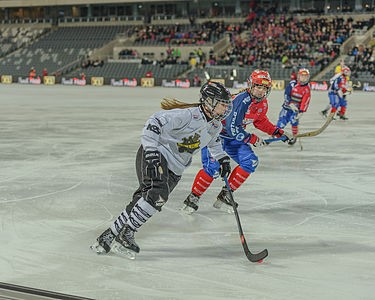

Hockey
| Home | About | Contactus | Indian Hockey Tournaments | International Hockey Tournaments | Subtypes |

Bandy is played with a ball on a football pitch-sized ice arena (bandy rink), typically outdoors, and with many rules similar to association football. It is played professionally in Russia and Sweden and is considered a national sport in Russia. The sport is recognised by the IOC; its international governing body is the Federation of International Bandy.
Bandy has its roots in England in the 19th century, was originally called "hockey on the ice", and spread from England to other European countries around 1900; a similar Russian sport can also be seen as a predecessor and in Russia, bandy is sometimes called "Russian hockey". Bandy World Championships have been played since 1957 and Women's Bandy World Championships since 2004. There are national club championships in many countries and the top clubs in the world play in the Bandy World Cup every year.